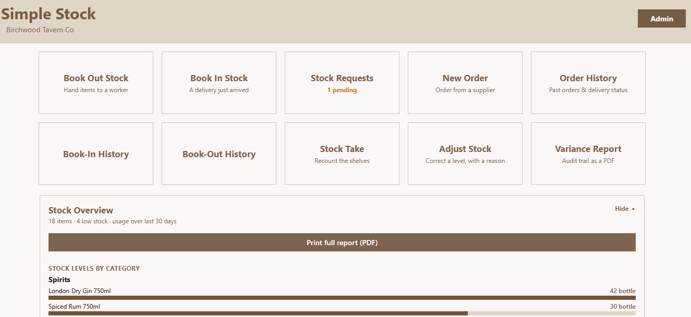
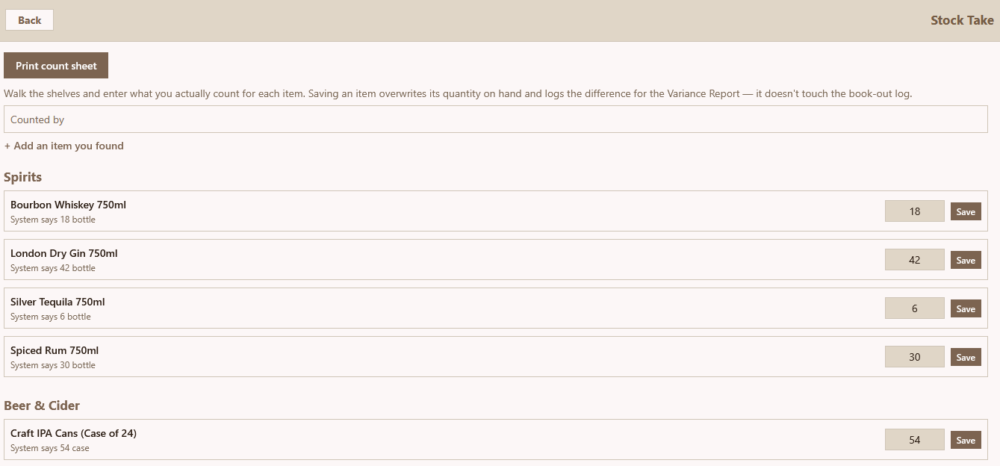
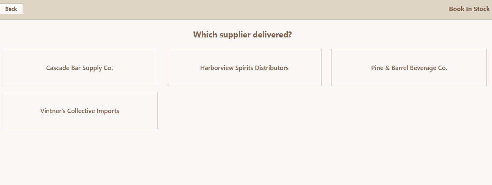
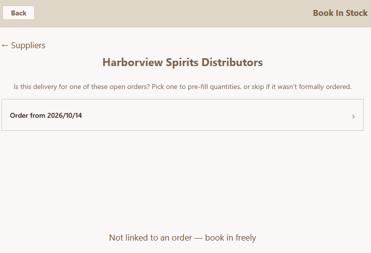
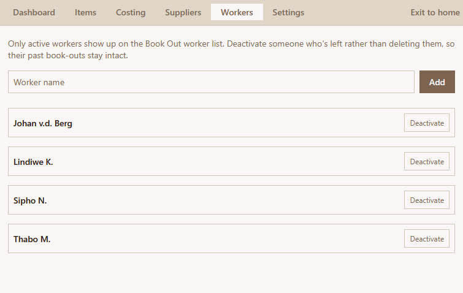
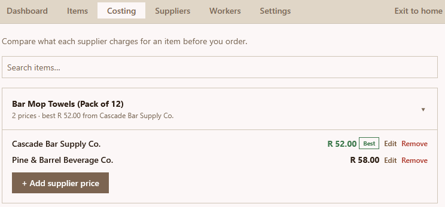
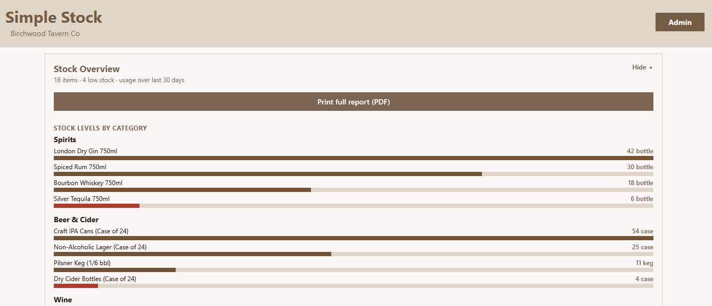
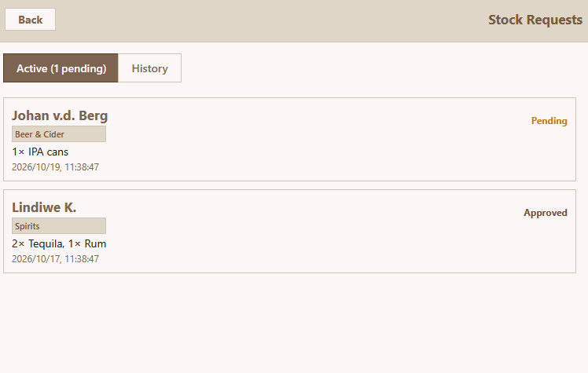

Simple Stock: one stock system for the office and the stock room.
Order from suppliers, compare their prices, book deliveries in, book stock out to named workers and count what's left, from a desktop app in the office or a tablet in the stock room.
This is a portfolio version of a system I built for a real facilities-management client. To keep their information private, it's shown with a fictional bar, Birchwood Tavern Co., and made-up stock.

Home screensimple-stock/hero-desktop.png
Stock takesimple-stock/hero-stocktake.png
Book in: pick the suppliersimple-stock/hero-bookin.pngThe problem
Stock was ordered by phone and email, deliveries were checked from memory, and items left the store room without a record. Nobody could say for sure what was on the shelf, what had been ordered, or where it had gone.
What I built
One shared system that records every way stock moves. The office uses it as a desktop app and the stock room uses a tablet, both working on the same data. Stock levels only change through four recorded actions, so every number has an explanation behind it.
How stock moves through it
Order from a supplier
Check which supplier is cheapest for each item, build a basket and send a purchase-order PDF. Drafts are saved, so you can close the app and finish the order later.
Book the delivery in
Pick the open order and the quantities fill themselves in. You only change what came in short, extra or substituted, and the order is marked received or partly received automatically.
Book stock out to a worker
Staff pick their own name on the tablet, then the item and quantity. The stock level drops straight away, and the book-out is recorded against that person.
Count and correct
A stock take records what's actually on the shelf and logs the difference. Anything that isn't a delivery, a book-out or a count needs an adjustment with a reason.
Report
A variance report PDF lists every count and adjustment over any date range, as a full audit trail.
Key features
Deliveries checked against the order
Link a delivery to its order and Simple Stock compares what arrived with what was ordered, line by line. Short deliveries show up straight away instead of at the next stock take.

simple-stock/feature-bookin.pngEvery item booked out to a named worker
Workers pick their name before they take anything, so every book-out has a person attached. The history shows who took what and when, and the overview shows who uses the most stock over the last 30 days.

simple-stock/feature-bookout.pngCompare what each supplier charges
The costing screen puts each supplier's price for the same item side by side, so you can see who's cheapest before you place an order.

simple-stock/feature-costing.pngStock levels at a glance
The home screen shows stock per category, with low items highlighted in red. It also shows the most-used items and who books out the most over the last 30 days. One button prints the full report as a PDF.

simple-stock/feature-overview.pngRequests from staff in the field
Staff send stock requests from a companion app, and the tablet or desktop gets a notification even when Simple Stock is closed. Each request can be matched to real items and booked out on the spot, or marked approved, ordered or rejected.

simple-stock/feature-requests.pngUnder the hood
Built with React Native and Expo Router. The same code runs on the Android tablet and is packaged as a Windows desktop app with Electron. Supabase (PostgreSQL) is the backend.
Stock levels are changed by database triggers, not by the app doing the maths. That means two devices recording stock at the same time can't overwrite each other's numbers.
It also keeps working when the signal drops. The item list is saved on the device, and every change is queued locally and synced as soon as the connection comes back.
The portfolio demo runs on a small built-in stand-in for the database, so anyone can install it and try it with no setup.
- React Native
- Expo Router
- TypeScript
- Supabase
- PostgreSQL triggers
- Electron
- PDF export
- Offline sync
Results
compared with counting on paper
against its order before it goes on the shelf
A line from the person who runs the stock room